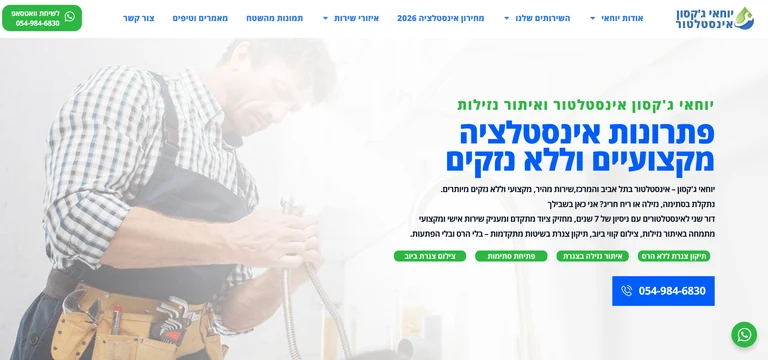
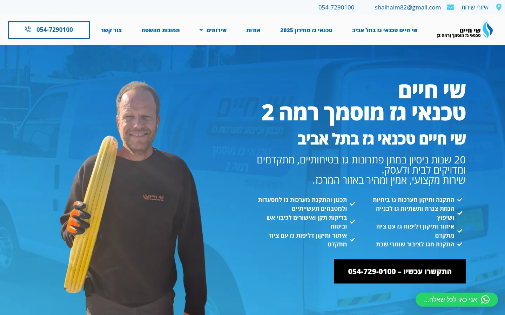
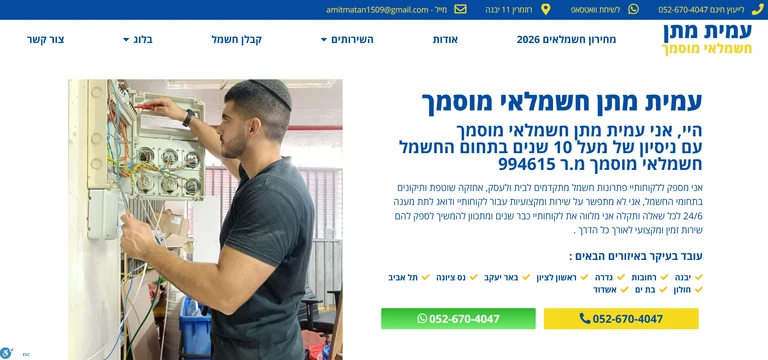
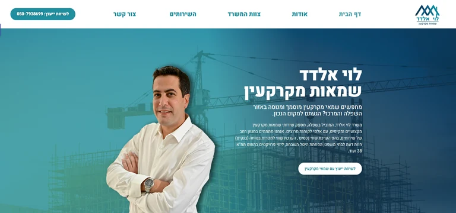
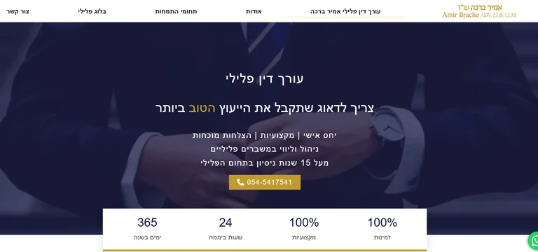
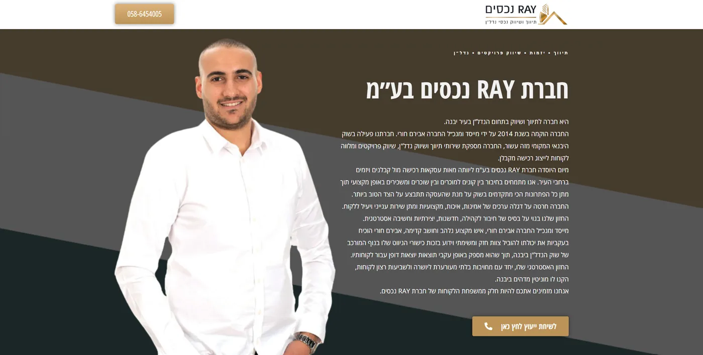
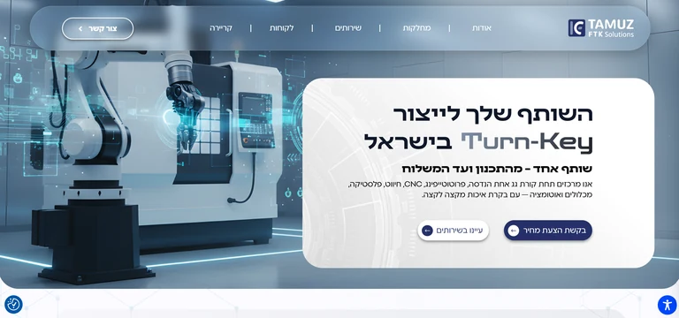
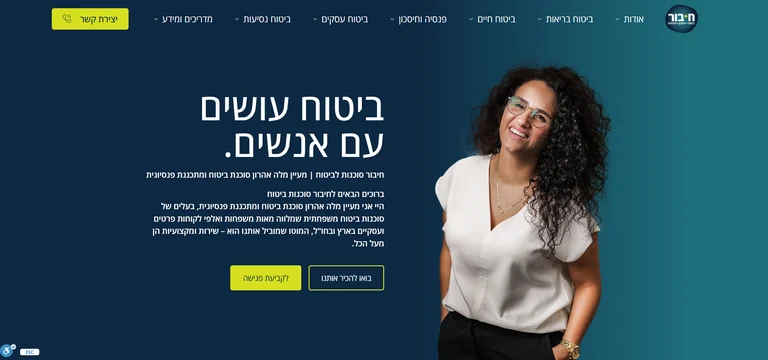
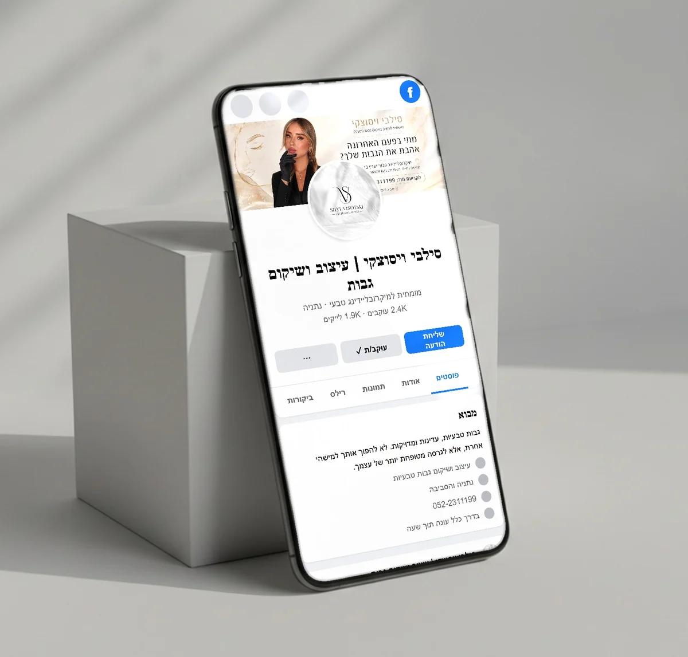

אתר תדמית טוב לא נמדד בכמה הוא יפה, אלא בכמה מהר הוא עונה לשאלה של הלקוח. בכל הדוגמאות שעובדות יש אותו שלד: מסך ראשון עם הבטחה ברורה וכפתור התקשרות, הוכחה מיד אחריו (ביקורות, רישיון, תיקים), עמוד לכל שירות, פנים של האדם שמאחורי העסק, שאלות נפוצות, ובמובייל כפתור שיחה ווואטסאפ שתמיד נמצא ביד. מה שמשתנה מתחום לתחום זה סדר העדיפויות: לאינסטלטור קודם כל טלפון ומהירות, לשמאי קודם כל מומחיות ותיקים, למפעל קודם כל יכולות ותקנים. בהמשך פירקתי 8 אתרים אמיתיים שבניתי, עם הסיבה מאחורי כל החלטה ומה שהיא הביאה בפועל.
רוב מי שמחפש "אתר תדמית לדוגמא" מקבל גלריה. צילום מסך, שם של עסק, ולמטה כפתור "לפרטים".
זה נחמד לעין. אבל זה לא עוזר לך להחליט כלום.
כי צילום מסך מראה לך איך אתר נראה. הוא לא מראה לך למה הוא בנוי ככה, למי הוא נבנה, ומה הוא הביא לעסק. ואתר שנראה מדהים בגלריה יכול להיות אתר שאף אחד לא מתקשר ממנו.
אז עשיתי משהו אחר. לקחתי 8 אתרי תדמית אמיתיים שבניתי לעסקים אמיתיים: אינסטלטור, טכנאי גז, חשמלאי, שמאי מקרקעין, משרד עורכי דין פלילי, מתווך נדל"ן, מפעל תעשייתי וסוכנות ביטוח. כל דוגמה מפורקת לארבעה חלקים: מי הלקוח, מה האתר היה צריך להשיג, אילו החלטות עיצוב ומבנה קיבלנו ולמה, ומה קרה אחר כך. איפה שיש נתון אמיתי, הוא כאן. איפה שאין, אני לא ממציא.
בסוף העמוד תמצא את השלד המשותף לכולם, טבלה של מה המסך הראשון חייב להראות בכל תחום, צ'קליסט של מה לגנוב מהדוגמאות, והטעויות שאני רואה שוב ושוב. ואם אתה בדרך לבנות אתר, גם איך להשתמש בדוגמאות כדי לתדרך מעצב בלי ללכת לאיבוד.
אם אתה מחפש דווקא כמה עולה אתר תדמית ואיך נראה התהליך, יש לזה עמוד נפרד: בניית אתר תדמית לעסק. כאן מדברים על דוגמאות.
01 איך קוראים אתר תדמית לדוגמא, ולא רק מסתכלים עליו?
כל אתר תדמית לדוגמה צריך לקרוא בשלוש שכבות: מה רואים, למה זה בנוי ככה, ומה זה הביא. רוב הגלריות ברשת עוצרות בשכבה הראשונה. ושם בדיוק מתחילה הטעות.
מניסיוני, בעל עסק שמסתכל על דוגמאות מתאהב בצבע, בתמונה גדולה, באנימציה. ואז הוא מבקש "משהו כזה". אבל הצבע הוא ההחלטה הכי פחות חשובה באתר. ההחלטות החשובות הן מה כתוב בשורה הראשונה, איפה הכפתור, איזו הוכחה מופיעה לפני שגוללים, וכמה עמודים יש ולמה.
צילום מסך מראה שכבה אחת. אתה צריך שלוש.
רוב הגלריות עוצרות בשכבה הראשונה. ההחלטה הנכונה נמצאת בשכבה השלישית.
שלוש שאלות שאני שואל על כל אתר שאני רואה
- תוך חמש שניות במסך הראשון, אני מבין מה העסק עושה, איפה, ולמי? אם לא, האתר לא עובד, גם אם הוא יפה.
- יש הוכחה לפני שגוללים? ביקורות, רישיון, ותק, לוגואים של לקוחות, תיקים. משהו שאומר "אחרים כבר סמכו עליו".
- מה הדבר הכי קל לעשות בעמוד? אם הדבר הכי קל הוא לסגור את הלשונית, יש בעיה. הדבר הכי קל צריך להיות להתקשר או לשלוח וואטסאפ.
התועלת: כשאתה קורא דוגמה ככה, אתה מפסיק להעתיק עיצוב ומתחיל להעתיק החלטות. וזה ההבדל בין אתר שנראה כמו של המתחרה לבין אתר שעובד יותר טוב משלו.
למה דווקא דוגמאות מהתיק שלי
כי רק עליהן אני יכול להגיד לך בכנות למה כל דבר בנוי כמו שהוא. אני לא יודע מה עבר בראש של מי שבנה אתר אחר, ואני לא יודע מה הוא הביא לבעלים שלו. על האתרים שלי אני יודע. בחלק מהם יש לי נתוני Search Console וגוגל אנליטיקס, ואני מביא אותם כמו שהם, עם התאריכים. כל דוגמה מקושרת לאתר החי (איפה שאפשר) ולקייס המלא.
02 אתרי תדמית לבעלי מקצוע: אינסטלטור, טכנאי גז, חשמלאי
באתר של בעל מקצוע, הלקוח מגיע עם תקלה ומחפש מהטלפון. לכן שלושת האתרים כאן בנויים סביב שני דברים: אמון מהיר וכפתור שיחה שתמיד ביד. מה שמבדיל ביניהם הוא איך כל אחד מהם בונה את האמון.

- אינסטלציה ואיתור נזילות
- גוש דן
- אתר תדמית + SEO
יוחאי ג׳קסון: אינסטלטור שהתחיל מאפס
מי הלקוח: אינסטלטור שיצא לעצמאות ימים ספורים לפני 7 באוקטובר, וגויס למילואים זמן קצר אחרי. הכרתי אותו דרך מיזם התנדבותי לעצמאים מילואימניקים, ומאז אני מלווה אותו. מה האתר היה צריך להשיג: להפוך בעל מקצוע בלי שום נוכחות דיגיטלית למותג שמופיע בגוגל, בלי תקציב לפרסום ממומן.
- 1ההבטחה בכותרת: "פתרונות אינסטלציה מקצועיים וללא נזקים". מי שיש לו נזילה מפחד משני דברים: שהבעיה תימשך, ושיהרסו לו את הקיר. הכותרת עונה על הפחד השני ישירות.
- 2תגיות שירות מתחת לכותרת: תיקון צנרת ללא הרס, איתור נזילה, פתיחת סתימות, צילום קווי ביוב. הלקוח מזהה את הבעיה שלו בשנייה, בלי לחפש בתפריט.
- 3"מחירון אינסטלציה 2026" ו"אזורי שירות" בתפריט הראשי. שתי השאלות הראשונות של כל לקוח הן "כמה" ו"אתה מגיע אליי?". שמנו אותן במקום שהכי קל למצוא.
- 4עמוד לכל שירות ולכל אזור, ומאמרים. זה מה שנותן לגוגל סיבה להראות את האתר בעשרות חיפושים שונים, ולא רק בחיפוש של השם.

- טכנאי גז מוסמך רמה 2
- תל אביב והמרכז
- אתר + מחירון + Google Business
שי חיים: טכנאי גז עם שני קהלים שונים
מי הלקוח: טכנאי גז עם יותר מ-20 שנות ניסיון, שעובד גם בבתים וגם במסעדות, אולמות ומטבחים תעשייתיים. מה האתר היה צריך להשיג: להוכיח תוך שניות שמי שנכנס לבית שלך מוסמך ואמין. בגז לא מזמינים את הראשון שעונה.
- 1"מוסמך רמה 2" בכותרת הראשית, ולא בעמוד אודות. זו ההוכחה שהלקוח מחפש, אז היא הדבר הראשון שהוא קורא.
- 2תמונה של שי עצמו, בבגדי עבודה, ולא סטוק. הלקוח רואה את מי שיגיע אליו הביתה. זה מוריד חשש יותר מכל משפט.
- 3עמוד מחירון אמיתי: כמה עולה כל שירות ומה משפיע על המחיר. רוב בעלי המקצוע כותבים "מחירים הוגנים" ועוצרים. אנחנו נתנו מידע.
- 4שני מסלולים נפרדים: עמודי שירות ללקוח פרטי, ועמוד ייעודי למסעדות ולתעשייה עם תיעוד של עבודות. בעל מסעדה לא מחפש את הזול, הוא מחפש מי שכבר עשה את זה.

- חשמלאי מוסמך
- המרכז והשפלה
- אתר תוכן רחב + וידאו
עמית מתן: חשמלאי שהעבודה שלו הפכה לתוכן
מי הלקוח: חשמלאי מוסמך עם עשרות סוגי עבודות בשטח: לוחות, תלת פאזי, תאורה, שיפוצי חשמל, עמדות טעינה. מה האתר היה צריך להשיג: שמי שלא מכיר את עמית ירגיש שהוא כבר מכיר את העבודה שלו, עוד לפני שהוא מתקשר.
- 1מספר הרישיון בכותרת המשנה. לקוח שבוחר חשמלאי רוצה לדעת שהוא מוסמך. מספר רישיון גלוי אומר "תבדוק אותי", וזה בדיוק מה שבונה אמון.
- 2רשימת ערים עם וי ירוק, במסך הראשון. "אתה מגיע אליי?" נענה לפני שהשאלה נשאלת.
- 3שני כפתורים בולטים בצבעים שונים: וואטסאפ בירוק, טלפון בצהוב. חלק מהאנשים מעדיפים לכתוב, חלק להתקשר. לא מכריחים אף אחד.
- 4סרטונים של עבודות אמיתיות בתוך האתר, מערוץ YouTube ייעודי, וביקורות כולל ממידרג. במקום לכתוב "עמית מקצועי", מראים את עמית עובד.
מה שלושת האתרים האלה מלמדים
שלושה בעלי מקצוע, שלושה צבעים שונים, שלוש דרכים להראות אמון. אבל השלד זהה: מי אני ומה אני עושה, איפה אני עובד, הוכחה שאני מוסמך, כמה זה עולה, ואיך מתקשרים אליי עכשיו. אם אתה בעל מקצוע ובאתר שלך חסר אחד מהחמישה, אתה כבר יודע מה לתקן קודם. כתבתי על זה לעומק בעמודים בניית אתר לאינסטלטור ובניית אתר לחשמלאי.
03 אתרי תדמית למשרדים מקצועיים: שמאי ועורך דין
במשרד מקצועי, הלקוח לא בלחץ של שעה. הוא עומד מול החלטה יקרה ובודק לפני שהוא פונה. לכן האתר צריך להוכיח מומחיות, לא רק זמינות. כאן הדגש עובר מכפתור החיוג לתוכן, לתיקים ולפנים.

- שמאות מקרקעין
- השפלה והמרכז
- אתר תדמית מלא + תוכן + צילום
אלדד לוי: מאתר Wix ישן לאתר ברמת המשרד
מי הלקוח: משרד שמאות שגדל, עם צוות ופעילות רחבה, ועם אתר Wix שחבר בנה לו פעם. לקוח שפגש משרד רציני במציאות קיבל תחושה אחרת לגמרי באתר. מה האתר היה צריך להשיג: לסגור את הפער הזה, ולהופיע בגוגל לפי הצורך המדויק של הלקוח.
- 1דף נפרד לכל צורך: היטל השבחה, תמ"א 38, חוות דעת לבית משפט, ליווי פרויקטים ובדיקות כדאיות. כל אחד מהם הוא חיפוש אחר בגוגל, ולכן עמוד אחר.
- 2תיקים והצלחות אמיתיים, מוצגים כהוכחה ולא כסיסמה. למשל, תיק של הפחתה של 37% בשומה מכריעה בחדרה. לקוח שעומד מול היטל השבחה רוצה לראות שזה אפשרי.
- 3יום צילום והפקה במשרד, במקום תמונות ישנות. אלדד, הצוות, המשרד, וסרטון תדמית. מי שנכנס לאתר מרגיש שהוא מכיר את המקום לפני הפגישה הראשונה.
- 4מאמרים מקצועיים שעונים לשאלות אמיתיות, כמו הערכת שווי נכס ותפקיד השמאי בעסקת נדל"ן. זה מה שבונה סמכות, גם בגוגל וגם בעיני הלקוח.

- משרד עורכי דין פלילי
- מיתוג מלא + אתר וורדפרס + יוטיוב
עו״ד אמיר ברכה: אתר לרגע הכי לחוץ בחיים של הלקוח
מי הלקוח: משרד עורכי דין בתחום הפלילי. מה האתר היה צריך להשיג: מי שמחפש עורך דין פלילי נמצא לרוב במשבר, שלו או של מישהו קרוב. הוא צריך להרגיש תוך שניות שהוא הגיע למקום רציני, שעונה עכשיו.
- 1כחול כהה וזהב. לא צבעים "שמחים". בתחום הזה הלקוח מחפש יציבות, שקט ורצינות, והפלטה משדרת בדיוק את זה.
- 2שלוש מילים במקום פסקה: "יחס אישי | מקצועיות | הצלחות מוכחות", ומתחת ותק בתחום הפלילי. אדם במשבר לא קורא טקסט ארוך.
- 3מוני זמינות מתחת לכותרת: 365 ימים בשנה, 24 שעות ביממה. בפלילי, הטלפון יכול להגיע בשתיים בלילה, והלקוח צריך לדעת שמישהו יענה.
- 4מיתוג מלא לפני האתר: צילומי פורטרט, סרטון תדמית וערוץ יוטיוב. באתר של עורך דין, הפנים של עורך הדין הן חלק מההוכחה.
ההבדל בין משרד לבעל מקצוע, במשפט אחד
אצל בעל מקצוע, האתר צריך לגרום לך להתקשר מהר. אצל משרד מקצועי, האתר צריך לגרום לך להתקשר בביטחון. לכן אצל אלדד ואמיר יש יותר תוכן, יותר צילום, יותר הוכחה מקצועית, ופחות "התקשרו עכשיו" צועק. שימו לב שאצל אמיר הזמינות בכל זאת קריטית, כי בפלילי יש גם רגע של חירום. האתר משלב את שני העולמות.
רוצה אתר כמו אלה לעסק שלך?
שלח לי את האתר הנוכחי שלך. גם אם הוא ישן, גם אם חבר בנה אותו, גם אם אין לך אתר בכלל ויש רק פרופיל בגוגל. אני אסתכל עליו בשלוש השכבות שתיארתי למעלה ואגיד לך בכנות מה עובד, מה חסר, ומאיזו דוגמה כדאי לך ללמוד. התועלת: תדע מה לתקן לפני שאתה משקיע שקל. שלח לי בוואטסאפ או השאר פרטים כאן.
04 מתווך, מפעל וסוכנות ביטוח: שלושה עולמות אחרים
שלוש הדוגמאות האלה מראות שאין "אתר תדמית" אחד. למתווך מספיק עמוד אחד חזק, למפעל צריך עשרות עמודים, ולסוכנות ביטוח צריך אתר שמחזיק תוכן שנים. הכול נגזר מאיך שהלקוח בוחר.

- תיווך נדל"ן
- יבנה
- אתר One Page
ריי נכסים: אתר של עמוד אחד, ו-114 ביקורות
מי הלקוח: אבירם חורי, מתווך עצמאי ביבנה שהתחיל כמעט לבד. מה האתר היה צריך להשיג: בתיווך בוחרים אדם. האתר היה צריך להיות הבית הדיגיטלי שמרכז מי אבירם, מה הוא עושה, ומה אומרים עליו.
- 1One Page ולא אתר של עשרים עמודים. מסלול אחד ברור: מי אבירם, מה הוא עושה, איפה, מה אומרים הלקוחות, ואיך יוצרים קשר. למתווך מקומי זה מספיק, וזה עולה פחות.
- 2אבירם במרכז המסך, לא דירה. אנשים לא בוחרים מתווך לפי תמונה של סלון. הם בוחרים לפי מי שהם הולכים לעבוד איתו.
- 3סרטוני נכסים מהשטח בתוך האתר, מערוץ YouTube שהקמנו מהחומרים שאבירם כבר צילם. אפס הפקה, הרבה הוכחה.
- 4האתר הוא רק שכבה אחת. מסביבו: פרופיל Google Business, תהליך קבוע לבקשת ביקורת בוואטסאפ אחרי כל עסקה, ואותם פרטים בדיוק בגוגל, איזי, יוטיוב והאתר.

- תעשייה, B2B
- קיבוץ יזרעאל
- מיתוג מחדש + אתר מבוסס מחלקות
Tamuz FTK Solutions: מפעל שהיה עמוד אחד באתר של מישהו אחר
מי הלקוח: יצרנית Turn-Key עם מאות עובדים ולקוחות מהתעשייה הביטחונית, הרפואית וההייטק. כשנפגשנו, כל הנוכחות שלה הייתה עמוד בודד באתר של קבוצת האם, תחת שני שמות שגוגל התבלבל ביניהם. מה האתר היה צריך להשיג: שמהנדס או איש רכש יבין בתוך דקה מה המפעל יודע לייצר, ושיוכל לאשר ספק בלי להרים טלפון.
- 1התחלנו מהמותג, לא מהאתר. שם אחד, לוגו חדש וספר מותג. אחר כך יום צילום במפעל. רק אז אתר, כשכל החומר כבר אמיתי.
- 2עמוד לכל אחת משש המחלקות ולכל אחד מתשעת השירותים, שנכתבו יחד עם מנהלי המחלקות לפי שאלון מסודר. מהנדס שמחפש יכולת ספציפית מגיע ישר לעמוד שעונה לו.
- 3עמוד תקנים עם התעודות עצמן: ISO 9001, ISO 13485, AS9100 ועוד. בתעשייה, זו ההוכחה הכי חזקה שיש. היא לא מסתתרת בתחתית.
- 4דף קריירה. מפעל בפריפריה צריך גם עובדים. אתר תדמית של חברה תעשייתית מדבר לשני קהלים: לקוחות ומועמדים.

- סוכנות ביטוח ופנסיה
- אתר תוכן + SEO + וידאו ופודקאסט
חיבור סוכנות לביטוח: אתר שמחזיק סוכנות שלמה
מי הלקוח: סוכנות ביטוח ופנסיה בניהול מעיין מלה אהרון. גילוי נאות: אני שותף בסוכנות, ומלווה אותה כבר יותר משבע שנים. מה האתר היה צריך להשיג: להוציא את הסוכנות מתלות בהמלצות מפה לאוזן, ולבנות נכס שמייצר אמון לאורך זמן.
- 1"ביטוח עושים עם אנשים." כותרת של ארבע מילים, ופנים אמיתיות לידה. בתחום שכולם מרגישים בו מוצר, הבידול הוא האדם שיושב מולך.
- 2תפריט לפי מה שהלקוח מחפש: ביטוח בריאות, ביטוח חיים, פנסיה וחיסכון, ביטוח עסקים, ביטוח נסיעות. כל אחד הוא שער כניסה מגוגל.
- 3מדור "מדריכים ומידע". בביטוח אנשים מחפשים הסבר לפני שהם מחפשים סוכן. מי שנותן את ההסבר, מקבל את השיחה.
- 4כפתור "לקביעת פגישה" ולא "קנה עכשיו". בביטוח ופנסיה מוכרים שיחה, לא פוליסה.
מה לומדים מהשלושה: גודל האתר נגזר מאיך שבוחרים בך
| הדוגמה | איך הלקוח בוחר | גודל האתר | ההוכחה המרכזית |
|---|---|---|---|
| מתווך (ריי נכסים) | בוחר אדם, לפי המלצות ותחושה | עמוד אחד | ביקורות בגוגל ופנים |
| מפעל (תמוז) | בודק יכולות, תקנים ואנשים | עשרות עמודים | תקני איכות ורצפת ייצור אמיתית |
| סוכנות ביטוח (חיבור) | מחפש הסבר, ואז מחפש מי שמסביר טוב | אתר תוכן שגדל כל הזמן | מדריכים, וידאו ואדם מוכר |
מניסיוני, הטעות הכי יקרה היא לבנות אתר בגודל הלא נכון. מתווך עם אתר של 30 עמודים ריקים משלם על משהו שלא צריך. מפעל עם One Page נראה קטן ממה שהוא. לפני שבוחרים דוגמה, צריך לדעת איך הלקוח שלך בוחר.
05 האנטומיה של אתר תדמית שמביא פניות
אם מורידים את הצבעים והתמונות מכל 8 הדוגמאות, נשאר שלד של שמונה חלקים שחוזר כמעט בכולם. הסדר יכול להשתנות קצת לפי תחום. החלקים עצמם כמעט לא.
שמונה חלקים, בסדר שבו הלקוח שואל את השאלות
עסק בדוי לגמרי, בצבעים של אינסטלטור ולא בצבעים שלי. ככה אמור להיראות השלד מאחורי העיצוב.
- 1הדר עם טלפון גלוי. לא מוסתר בתפריט.
- 2הבטחה + מי + איפה + כפתור. כל התשובה במסך אחד.
- 3הוכחה מיד אחרי. ביקורות, רישיון, ותק.
- 4שירותים, וכל אחד מוביל לעמוד משלו.
- 5פנים ושם. אנשים קונים מאנשים.
- 6ביקורות אמיתיות, עדיף מגוגל.
- 7שאלות נפוצות שמורידות התנגדויות.
- 8טופס קצר. שם וטלפון. לא יותר.
- 9במובייל: חיוג ווואטסאפ קבועים בתחתית המסך.
העסק, הטלפון והביקורות באיור בדויים, להמחשה בלבד.
החלק שהכי הרבה אתרים מפספסים: מספר 2
המסך הראשון. רוב האתרים שאני מקבל לבדיקה פותחים ב"ברוכים הבאים" או בסלוגן יפה שלא אומר כלום. הלקוח לא יודע מה העסק עושה, איפה, ולמה לבחור בו. אצל שי חיים, "מוסמך רמה 2" נמצא בכותרת. אצל עמית מתן, מספר הרישיון ורשימת הערים. אצל יוחאי, "ללא נזקים". כל אחד מהם עונה על השאלה הכי גדולה של הלקוח שלו, לפני שהוא גולל.
החלק שהכי הרבה אנשים מוותרים עליו: מספר 7
שאלות נפוצות נשמעות כמו משהו משעמם. בפועל, זה המקום שבו מורידים את ההתנגדות האחרונה: כמה זה עולה, כמה זמן זה לוקח, מה אם זה לא יעבוד. ויש לזה עוד יתרון: שאלות ותשובות קצרות וברורות הן בדיוק המבנה שמנועי חיפוש ומנועי AI אוהבים לצטט. כתבתי על זה במדריך לקידום ב-AI.
ומה עם עמודים פנימיים?
דף הבית הוא רק דלת. רוב התנועה האורגנית אצל יוחאי, שי ואלדד מגיעה לעמודים פנימיים: עמוד שירות, עמוד אזור, עמוד מחירון, מאמר. התועלת של עמוד לכל שירות: כל עמוד הוא עוד הזדמנות להופיע בגוגל למישהו שמחפש בדיוק את זה. אתר של חמישה עמודים כלליים מופיע בעיקר כשמחפשים את השם שלך. אם זה מה שקורה לך, כדאי לקרוא את למה האתר לא מופיע בגוגל.
06 מה המסך הראשון חייב להראות, לפי תחום
בכל תחום יש שאלה אחת שהלקוח שואל לפני כל השאר. המסך הראשון של האתר צריך לענות עליה, ולא על שאלה אחרת. זה הדבר הכי חשוב שלמדתי מבניית אתרים בתחומים כל כך שונים.
כל תחום, שאלה אחת שהמסך הראשון חייב לענות עליה
מבוסס על הדוגמאות בעמוד הזה. תענה על השאלה הזו קודם, וכל השאר יחכה.
| תחום | מה בראש העמוד | ההוכחה החזקה ביותר | הפעולה העיקרית | דוגמה מהעמוד |
|---|---|---|---|---|
| אינסטלטור, חשמלאי, טכנאי | מה אתה פותר, איפה, ומספר טלפון | ביקורות בגוגל, רישיון, תמונות מהשטח | שיחה או וואטסאפ | יוחאי, שי, עמית |
| שמאי, רואה חשבון, יועץ | תחומי התמחות וותק | תיקים והצלחות, מאמרים מקצועיים | שיחת ייעוץ | אלדד לוי |
| עורך דין | תחום משפטי אחד ברור וזמינות | ותק, פנים, ביקורות | שיחה מיידית | עו״ד אמיר ברכה |
| מתווך נדל"ן | הפנים שלך והעיר | כמות ביקורות ודירוג | שיחה או וואטסאפ | ריי נכסים |
| מפעל, חברה תעשייתית | משפט אחד על היכולת, ומעבר לשירותים | תקני איכות, לקוחות, רצפת ייצור | פנייה לאיש מפתח או בקשת הצעה | Tamuz FTK |
| סוכן ביטוח ופנסיה | מסר אנושי ופנים | תוכן מסביר, וידאו, המלצות | קביעת פגישה | חיבור |
| קליניקת ביוטי | עבודות אמיתיות והסגנון | לפני ואחרי, ביקורות | וואטסאפ לקביעת תור | סילבי (ראו פרק 11) |
אם התחום שלך לא מופיע בטבלה, תשאל את עצמך שאלה אחת: מה הלקוח שלי מפחד שיקרה אם יבחר לא נכון? התשובה לשאלה הזו היא מה שצריך להופיע בראש העמוד. יש לי עמודים ייעודיים לכמה תחומים, למשל אתר לסוכן ביטוח ואתר לקוסמטיקאית.
07 למה כל דוגמה צריך לבדוק קודם בטלפון
אצל שניים מהלקוחות בעמוד הזה, יוחאי ג׳קסון ושי חיים, 78% מהתנועה לאתר הגיעה מהטלפון. זה לא מפתיע. מי שיש לו נזילה או ריח של גז לא יושב מול מחשב. הוא עומד במטבח עם הטלפון ביד.
ובכל זאת, רוב האנשים בוחרים אתר לדוגמא כשהם יושבים מול מסך גדול. הם מתאהבים בתמונה רחבה ובאנימציה, ולא בודקים מה קורה כשהאתר נדחס למסך של 6 אינץ'.
וזה לא רק עניין של לקוחות. גוגל משתמש בגרסת המובייל של האתר כדי לסרוק ולדרג אותו. לפי התיעוד של Google Search Central, מה שלא מופיע בגרסת המובייל, בפועל לא קיים מבחינת הדירוג.
הבדיקה שאני עושה על כל אתר לדוגמא, בדקה אחת
- פותחים את האתר בטלפון, לא במחשב.
- בלי לגלול: מבינים מה העסק עושה ואיפה? רואים כפתור התקשרות?
- גוללים עד האמצע: הכפתור עדיין שם? אצל שי חיים, למשל, כפתור הוואטסאפ צף בפינה לאורך כל הגלילה.
- לוחצים על הטלפון: נפתח חיוג? או שצריך להעתיק את המספר?
- לוחצים על וואטסאפ: נפתחת שיחה עם הודעה מוכנה, או מסך ריק?
- בודקים מהירות: אם האתר לוקח הרבה זמן להיטען ברשת סלולרית, הלקוח כבר חזר לגוגל. גוגל מגדיר את הסף בכלי Core Web Vitals.
התועלת: בדקה אחת אתה יודע אם הדוגמה שאתה אוהב באמת עובדת, או רק נראית טוב בצילום. כל האתרים שאני בונה עוברים את הבדיקה הזו לפני מסירה, ויושבים על שרת ישראלי מהיר עם SSL וגיבויים. פרטים בעמוד אחסון ותחזוקה.
08 מה לגנוב מהדוגמאות: צ'קליסט
לא את הצבעים ולא את הפונטים. את ההחלטות. הנה עשר החלטות שחוזרות באתרים שעובדים, וכל אחת מהן אפשר להעתיק לכל תחום.
10 החלטות שכדאי לגנוב מהדוגמאות
תעבור על האתר שלך (או על הבריף) ותסמן. כל מה שלא מסומן, זו המשימה הבאה.
- כותרת שעונה על הפחד"ללא נזקים", "מוסמך רמה 2". לא "ברוכים הבאים".
- אזור שירות גלוירשימת ערים במסך הראשון, כמו אצל עמית.
- הוכחה לפני גלילהרישיון, ביקורות, תקנים או תיקים.
- פנים אמיתיותשלך ושל הצוות. לא סטוק.
- עמוד לכל שירותועמוד לכל אזור, אם אתה עובד בכמה ערים.
- עמוד מחירוןטווחים ומה משפיע. אצל שי הוא לבד צבר 4,300+ חשיפות.
- וידאו מהשטחעבודה אמיתית, לא הפקה. עמית, ריי ותמוז.
- שאלות נפוצותשמורידות התנגדויות לפני השיחה.
- חיוג ווואטסאפ קבועים במוביילתמיד ביד, בכל גלילה.
- חיבור לגוגל ולביקורותאותם פרטים בדיוק באתר ובפרופיל העסק.
למה הסעיף האחרון חשוב יותר ממה שנראה
אצל ריי נכסים, האתר עצמו הוא עמוד אחד. מה שעשה את ההבדל הוא שהאתר מחובר לפרופיל Google Business עם 114 ביקורות, ושהשם, הטלפון והכתובת זהים בכל מקום. אתר תדמית לא עובד לבד. הוא עובד הכי טוב כשהוא הבית של כל הנכסים האחרים. אם עוד לא סידרת את הפרופיל בגוגל, תתחיל מהמדריך לפרופיל עסק בגוגל, ואחר כך מאיך להשיג ביקורות בגוגל.
09 הטעויות הנפוצות באתרי תדמית לדוגמה
רוב הטעויות שאני רואה לא נובעות מעיצוב גרוע, אלא מהעתקה של דבר שעבד אצל מישהו אחר, בתחום אחר, לקהל אחר. אלה החמש שחוזרות הכי הרבה.
1. להעתיק את הצבעים במקום את המבנה
בעל עסק רואה אתר שחור וזהב של עורך דין ורוצה אותו לחנות הפרחים שלו. הצבעים של אמיר ברכה עובדים כי הם משדרים רצינות בתחום שבו הלקוח בלחץ. בתחום אחר, אותם צבעים ישדרו משהו לא נכון. הצבע הוא החלטה אחרונה, לא ראשונה.
2. סליידר בראש העמוד
שלוש תמונות מתחלפות, כל אחת עם מסר אחר. הלקוח רואה את הראשונה, ולפעמים חצי מהשנייה. אין אף דוגמה בעמוד הזה שפותחת בסליידר. מסר אחד, ברור, במסך הראשון, עדיף על שלושה מסרים שאף אחד לא קורא.
3. תמונות סטוק של "אנשי עסקים לוחצים ידיים"
אצל אלדד לוי ואצל תמוז, יזמנו יום צילום במיוחד כדי לא להשתמש בסטוק. הלקוח מזהה תמונת מאגר בשנייה, והיא אומרת לו "אין פה אף אחד אמיתי". תמונה פשוטה מהטלפון, של העבודה שלך, עדיפה על התמונה הכי יפה מאגר.
4. דף "שירותים" אחד עם רשימה
עשרה שירותים בעמוד אחד, כל אחד בשורה. גוגל לא יודע לאיזה חיפוש העמוד הזה עונה, והלקוח לא מוצא את התשובה לבעיה שלו. אצל אלדד, כל שירות קיבל עמוד, ואצל תמוז כל מחלקה. התועלת של עמודים נפרדים: יותר כניסות מגוגל, והלקוח נוחת ישר על הבעיה שלו.
5. אתר שנבנה, עלה, ונשכח
האתר של עמית מתן קיבל תוכן חדש גם ביולי 2026. אתרים שנבנים ונשכחים מתיישנים: מחירון של לפני שלוש שנים, תמונות ישנות, תוספים שלא מתעדכנים. אתר תדמית הוא נכס, ונכס צריך תחזוקה. אם האתר שלך כבר במצב כזה, יש סיכוי שהוא צריך תיקון ושדרוג ולא בנייה מחדש.
10 איך להשתמש בדוגמאות כשמתדרכים בונה אתרים
במקום לשלוח למעצב "אני רוצה משהו כזה" עם לינק, שלח לו בריף שמפרק את הדוגמה לשלוש השכבות. ככה אתה מקבל אתר שעובד בשבילך, ולא העתק של אתר שעבד בשביל מישהו אחר.
תבנית בריף שאני ממליץ להשתמש בה
| שאלה בבריף | דוגמה לתשובה טובה | דוגמה לתשובה שלא עוזרת |
|---|---|---|
| מי הלקוח שלי, ובאיזה מצב הוא מחפש? | בעל דירה עם נזילה, מחפש מהטלפון, רוצה מישהו היום | כולם |
| מה הוא מפחד שיקרה? | שישברו לו את הקיר ושהמחיר יקפוץ | לא יודע |
| מה ההוכחה הכי חזקה שיש לי? | ביקורות בגוגל, רישיון, סרטונים מהשטח | אני מקצועי ואמין |
| מה הפעולה שאני רוצה שהוא יעשה? | להתקשר או לשלוח וואטסאפ | שיתרשם |
| איזו דוגמה, ומה בדיוק אני אוהב בה? | אצל שי חיים: ההסמכה בכותרת ועמוד המחירון | אני אוהב את הכחול |
| מה אני לא רוצה? | סליידר, תמונות סטוק, טופס של 8 שדות | (ריק) |
ומה לבקש לראות מבונה האתר עצמו
- אתרים חיים, לא רק צילומי מסך. תפתח אותם בטלפון ותעשה את בדיקת הדקה מפרק 7.
- תוצאה אחת אמיתית לפחות. ביקורות, מיקומים, חשיפות. לא "לקוחות מרוצים".
- מי כותב את התוכן. אתר בלי תוכן טוב הוא תבנית יפה וריקה. אצלי, כתיבת התוכן היא חלק מהעבודה.
- על שם מי הדומיין והאתר. הם צריכים להיות שלך, תמיד.
- מה קורה אחרי שהאתר עולה. אחסון, גיבויים, עדכונים, ומי עונה כשמשהו נשבר.
התועלת: בריף כזה חוסך סבב תיקונים שלם, ומבטיח שהשיחה עם המעצב תהיה על מה שמביא לקוחות, לא על גוונים. אם אתה מתלבט גם על הפלטפורמה, השוויתי בין האפשרויות בוורדפרס מול Wix. האתרים שלי נבנים על וורדפרס ואלמנטור.
11 מתי אתר תדמית הוא לא הצעד הראשון
לא כל עסק צריך להתחיל מאתר. לפעמים הצעד הנכון הוא פרופיל גוגל, דף נחיתה לקמפיין, או נוכחות ברשתות, והאתר מגיע אחר כך. אני אומר את זה גם כשזה אומר שאני מוכר פחות.

- מיקרובליידינג ועיצוב גבות
- נתניה
- בלי אתר, עם קמפיינים
סילבי ויסוצקי: דוגמה לעסק שהתחיל בלי אתר תדמית
מי הלקוחה: מומחית לעיצוב ושיקום גבות טבעיות. לפני שהגיעה אליי, עבדה עם קמפיינר שבחרה לפי מחיר, והתוצאות לא הגיעו. מה היה צריך: שיחות עם נשים שמחפשות בדיוק את הסגנון שלה, מהר.
- 1במקום אתר, נוכחות מסודרת ברשתות: שם, לוגו, קאבר ומסר אחד ברור. בביוטי, הלקוחה בודקת עבודות באינסטגרם ובפייסבוק.
- 2קמפיינים שמובילים לשיחה ישירה, לא לטופס באתר. הלקוחה כותבת, סילבי עונה.
אז מתי לא להתחיל מאתר תדמית
- כשהעסק שלך נמכר ויזואלית ברשתות (ביוטי, אוכל, אירועים) ואתה צריך פניות עכשיו. אפשר להתחיל בקמפיין ובנוכחות ברשתות, ולבנות אתר כשיש בסיס.
- כשאין לך פרופיל Google Business מסודר. לבעל מקצוע מקומי, זה לפעמים הצעד שמביא את השיחה הראשונה מהר יותר מאתר. פרטים בקידום עסק בגוגל.
- כשאתה רוצה לבדוק הצעה אחת בקמפיין. לזה יש דף נחיתה, לא אתר תדמית.
- כשאין לך זמן לספק שום חומר. לא תמונות, לא תשובות לשאלון, לא שעה לשיחת אפיון. אתר שנבנה בלי החומר שלך יוצא גנרי. עדיף לחכות חודש.
ואם כן הגיע הזמן: זמנים ומחיר בקצרה
אתר תדמית על תבנית מותאמת לוקח אצלי בערך שבועיים. אתר עם מיתוג מאפס, צילום ותוכן מלא, בערך חודש. מה שמשפיע על המחיר: כמה עמודים, האם צריך מיתוג וצילום, מי כותב את התוכן, והאם בונים מבנה לקידום אורגני מהיום הראשון. הטווחים המלאים והפירוט נמצאים בעמוד בניית אתר תדמית ובעמוד המחירון. אחסון ותחזוקה על שרת ישראלי, עם SSL, גיבויים ותוספים, עולים 120 ₪ לחודש פלוס מע"מ. ואם המטרה היא גם להופיע בגוגל לאורך זמן, שווה לקרוא על קידום אתרים ועל קידום אורגני מול קמפיינים.
שאלות נפוצות
איפה אפשר לראות אתר תדמית לדוגמא אמיתי?
בעמוד הזה יש 8 אתרי תדמית אמיתיים שבניתי: אינסטלטור, טכנאי גז, חשמלאי, שמאי מקרקעין, משרד עורכי דין פלילי, מתווך נדל"ן, מפעל תעשייתי וסוכנות ביטוח. ליד רובם יש קישור לאתר החי ולקייס המלא. אני ממליץ לפתוח אותם בטלפון, כי רוב הלקוחות שלך יראו אותם משם.
מה חייב להיות בדף הבית של אתר תדמית?
הבטחה ברורה עם מה העסק עושה ואיפה, כפתור שיחה או וואטסאפ, הוכחה מיד אחרי (ביקורות, רישיון, תיקים), שירותים שכל אחד מוביל לעמוד משלו, הפנים שלך, ביקורות, שאלות נפוצות וטופס קצר. במובייל, כפתורי חיוג ווואטסאפ שתמיד נמצאים בתחתית המסך.
כמה עמודים צריך באתר תדמית?
תלוי איך הלקוח בוחר בך. למתווך מקומי, כמו ריי נכסים, עמוד אחד חזק הספיק. לבעל מקצוע שרוצה להופיע בגוגל צריך עמוד לכל שירות ולכל אזור. למפעל כמו תמוז היו עמודים לשש מחלקות ולתשעה שירותים. הכלל: עמוד לכל דבר שהלקוח מחפש בנפרד.
אפשר להעתיק עיצוב של אתר לדוגמה שאהבתי?
להעתיק עיצוב אחד לאחד זה לא נכון, לא מקצועית ולא מבחינת זכויות. אבל ללמוד מההחלטות שלו זה בדיוק מה שצריך לעשות: איפה הכפתור, מה כתוב בכותרת, איזו הוכחה מופיעה ראשונה. תביא לבונה האתר את הדוגמה ותסביר מה בדיוק אתה אוהב בה, והוא יתרגם את זה לעסק שלך.
מה ההבדל בין אתר תדמית לדף נחיתה?
אתר תדמית מציג את העסק כולו: שירותים, אודות, תוכן, ביקורות. הוא נבנה להחזיק שנים ולהביא תנועה מגוגל. דף נחיתה הוא עמוד אחד עם מטרה אחת, בדרך כלל לקמפיין ממומן. לבדיקה של הצעה אחת, דף נחיתה. לבניית נוכחות לאורך זמן, אתר תדמית.
האם אתר תדמית לבד מביא לקוחות מגוגל?
אתר שבנוי נכון, עם עמוד לכל שירות ותוכן אמיתי, נותן לגוגל סיבה להראות אותו. אבל רוב התוצאות בעמוד הזה הגיעו מאתר שעובד יחד עם פרופיל Google Business, ביקורות ותוכן שמתווסף לאורך זמן. אצל יוחאי ג׳קסון, למשל, זה הגיע ל-509,442 הופעות בגוגל ב-11 חודשים, בלי פרסום ממומן.
אתר תדמית בוורדפרס או ב-Wix?
אני בונה על וורדפרס ואלמנטור, על שרת ישראלי מהיר. היתרון: האתר והדומיין שלך, יש גמישות מלאה בתוכן ובמבנה לקידום, ואין תלות בפלטפורמה אחת. אלדד לוי, למשל, עבר מאתר Wix ישן לאתר וורדפרס מלא. ההשוואה המלאה נמצאת בעמוד וורדפרס מול Wix.
כמה זמן לוקח לבנות אתר תדמית כמו בדוגמאות?
אתר על תבנית מותאמת לוקח בערך שבועיים. אתר עם מיתוג מאפס, יום צילום ותוכן מלא, כמו של אלדד לוי או תמוז, לוקח בערך חודש, ולפעמים יותר כשיש הרבה עמודים ותוכן שנכתב יחד עם הלקוח. מה שהכי מאריך פרויקטים זה חומרים שלא מגיעים: תמונות, תשובות לשאלון ואישורים.
צריך צילום מקצועי לאתר תדמית?
לא תמיד. אצל בעלי מקצוע, תמונות מהשטח מהטלפון ועבודות אמיתיות עובדות מצוין, וזה מה שעשינו אצל עמית מתן וריי נכסים. במשרדים מקצועיים ובחברות, כמו אצל אלדד לוי ותמוז, יום צילום מקצועי שינה את כל הנראות. מה שצריך להימנע ממנו זה תמונות סטוק.
איך אני יודע אם האתר הנוכחי שלי צריך החלפה או רק שיפור?
תעשה את בדיקת הדקה בטלפון מהעמוד הזה ותעבור על הצ'קליסט של 10 ההחלטות. אם רוב הסעיפים חסרים, ובעיקר המסך הראשון והעמודים לשירותים, כנראה צריך לבנות מחדש. אם החסר הוא בעיקר תוכן, ביקורות או מהירות, לפעמים שיפור מספיק. אפשר גם לשלוח לי את האתר, ואגיד לך בכנות.
- איך גוגל סורק ומדרג לפי גרסת המובייל של האתר: Google Search Central: Mobile-first indexing
- מדדי מהירות וחוויית משתמש שגוגל מגדיר: web.dev: Core Web Vitals
- עקרונות בסיס למבנה אתר ותוכן שגוגל מבין: Google Search Central: SEO Starter Guide
- איך לבנות תוכן מועיל שנכתב בשביל אנשים: Google Search Central: Creating helpful content
- ביקורות בפרופיל העסק בגוגל: Google Business Profile Help
- הנתונים של הלקוחות: מתוך עמודי הקייס סטאדי באתר, Search Console, Google Analytics ו-Meta Ads, עם התאריכים שמופיעים בכל קייס.

משה מולה, מייסד Mula Digital
יותר מ-20 שנה במכירות ובפיתוח עסקי. מי שמביא לכם את הלקוחות, ולא מחכה להם.
9 שנים בדיגיטל: מלווה עסקים ביצירת מותגים, אתרים, גוגל, תוכן, רשתות, קמפיינים, CRM, אוטומציות ו-AI.
אני לא רק "בונה אתרים" ולא רק "קמפיינר". אני מנהל השיווק החיצוני שלכם: אחד שאחראי על הכול, ומודד את זה בפניות ובלקוחות, לא בלייקים.
126 עסקים שליוויתי לאורך השנים. מה שאני כותב כאן, ראיתי קורה אצלם.
רוצה אתר כמו אלה לעסק שלך?
שלח לי את האתר הנוכחי שלך, או את האתר של מתחרה שאתה אוהב. אני אגיד לך בכנות מה עובד בו, מה חסר, ומה הייתי בונה במקומו.